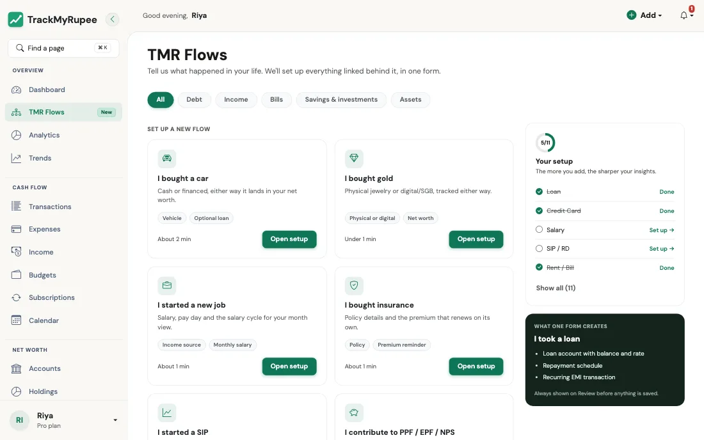

TMR Flows¶
TrackMyRupee को बताइए कि आपकी ज़िंदगी में क्या हुआ, और वह उससे जुड़ी हर चीज़ एक साथ सेट कर देता है।
1. Flow क्या है¶
सोचिए जब आप नए फ्लैट में शिफ्ट होते हैं तब क्या होता है। आप बिजली विभाग, फिर गैस एजेंसी, फिर Wi-Fi कंपनी, फिर बैंक को एक-एक करके, हर जगह अलग फॉर्म के साथ फोन नहीं करते। आप एक मददगार एजेंट से कहते हैं "मैं शिफ्ट हो गया", और वह सब एक साथ अपडेट हो जाता है।
एक TMR Flow भी ऐसे ही काम करता है। Flows के बिना, अगर आप कार लोन लेते हैं, तो आपको यह सब करना पड़ता:
- एक लोन रिकॉर्ड बनाना।
- ब्याज दर जोड़ना।
- आवर्ती EMI सेट करना।
- डाउन पेमेंट को कैपिटल इवेंट के रूप में दर्ज करना।
- कार को संपत्ति के रूप में जोड़ना।
I bought a car Flow के साथ, आप एक छोटा फॉर्म भरते हैं और ये पांचों चीज़ें आपके लिए बन जाती हैं, एक-दूसरे से ठीक से जुड़ी हुई।
आज 11 Flows हैं, जो पांच श्रेणियों में बंटे हैं:
| श्रेणी | Flows |
|---|---|
| कर्ज़ | I took a loan, I got a credit card |
| आय और बिल | I started a new job, I pay rent, I bought insurance |
| बचत और निवेश | I started a SIP, I booked an FD, I contribute to PPF / EPF / NPS, I'm saving for something |
| संपत्ति | I bought a car, I bought gold |
2. TMR Flows खोलना¶
डेस्कटॉप पर साइडबार में TMR Flows पर क्लिक करें। फिलहाल उस पर एक छोटा New बैज लगा है।

पेज की शुरुआत इस पंक्ति से होती है: "Tell us what happened in your life. We'll set up everything linked behind it, in one form." इसके नीचे आपको मिलेगा:
- Category tabs: ऊपर की ओर, All, Debt, Income, Bills, Savings & investments और Assets। सूची छोटी करने के लिए किसी एक पर टैप करें।
- Set up a new flow: वे Flows जो आपने अभी तक इस्तेमाल नहीं किए। हर कार्ड में एक पंक्ति का विवरण, कुछ टैग और समय का मोटा अनुमान होता है, जैसे "About 1 min"।
- Already set up: वे Flows जिन्हें TrackMyRupee देख सकता है कि आप पहले ही पूरे कर चुके हैं। इनमें से हर एक में Edit existing लिंक होता है जो आपको बदलाव करने के सही पेज पर ले जाता है (उदाहरण के लिए, Loan Flow के लिए आपकी लोन सूची, या क्रेडिट कार्ड के लिए आपका खाते वाला पेज)।
- Your setup: एक छोटा प्रगति पैनल, जिसमें 3/11 जैसी गिनती और मुख्य Flows की चेकलिस्ट (Loan, Credit Card, Salary, SIP / RD और Rent / Bill) होती है। यह कोई परीक्षा नहीं है। यह बस यह देखने का एक आसान तरीका है कि आपके पैसों के कौन-से हिस्से ऐप को पहले से पता हैं।
- What one form creates: एक प्रीव्यू पैनल जो बताता है कि चुना हुआ Flow क्या-क्या बनाएगा, ताकि कोई आश्चर्य न हो।
- Request a flow: अगर आपकी स्थिति सूची में नहीं है, तो हमें बताइए और हम उसे बना देंगे।
समझ नहीं आ रहा कहां से शुरू करें?
ज़्यादातर लोगों को इस क्रम से सबसे अच्छा नतीजा मिलता है: I started a new job (ताकि आपका महीना सही नापा जाए), फिर I pay rent, फिर I took a loan या I got a credit card अगर वे लागू हों। इन चारों के बाद आपका Dashboard समझ में आने लगता है।
3. Flow कैसे काम करता है¶
हर Flow एक ही तीन कदमों का पालन करता है।
चरण 1: ब्योरा भरें¶
फॉर्म छोटे चरणों में बंटा होता है, जिन पर Step 1 of 2 जैसा प्रगति लेबल होता है। हर फ़ील्ड के नीचे सरल भाषा में सहायता की एक पंक्ति होती है। वैकल्पिक चिह्नित फ़ील्ड छोड़े जा सकते हैं।
चरण 2: समीक्षा (Review)¶
कुछ भी सेव होने से पहले, आप एक Review स्क्रीन पर पहुंचते हैं। यह दिखाती है:
- You're setting up: सरल शब्दों में एक पंक्ति का सारांश, जैसे "₹5,000 every month. SIP into Nifty 50 Index Fund from HDFC Salary, starting 15 Oct 2026."
- What we'll create: कार्डों की एक छोटी सूची, आपके खाते में जोड़ी जाने वाली हर चीज़ के लिए एक।
- Your answers: आपने जो कुछ भी लिखा, हर भाग के साथ Edit लिंक, ताकि आप गलती बिना शुरू से दोबारा किए सुधार सकें।
- Warnings, अगर कोई हों। सबसे आम है प्लान की सीमा (नीचे देखें)।
चरण 3: पुष्टि करें¶
Confirm and create दबाएं। आप सफलता संदेश के साथ Dashboard पर पहुंच जाते हैं, और सब कुछ अपनी जगह पर होता है। इस बटन को दबाने तक कुछ नहीं बनता, इसलिए आप बेफिक्र होकर Back या Cancel दबा सकते हैं।
इसे रेस्तरां के बिल की तरह समझें
Review स्क्रीन वह विस्तृत बिल है जो भुगतान से पहले मेज़ पर आता है। आप हर आइटम देख सकते हैं, जो गड़बड़ लगे उस पर सवाल कर सकते हैं, और उसके बाद ही कार्ड देते हैं।
4. "Create Historical Entries": पुराने रिकॉर्ड भरने वाला स्विच¶
कई Flows में Create historical entries नाम का एक चेकबॉक्स होता है। यह तभी मायने रखता है जब आपकी शुरू होने की तारीख बीत चुकी हो, इसलिए इसे एक बार समझ लेना अच्छा है।
- Off (डिफ़ॉल्ट): TrackMyRupee नए सिरे से शुरू करता है। वह अतीत को नहीं छूता। शेड्यूल अगली आने वाली देय तारीख से शुरू होता है।
- On: TrackMyRupee आपकी शुरू होने की तारीख और आज के बीच की हर छूटी हुई तारीख की प्रविष्टि तुरंत दर्ज कर देता है, ताकि आपका इतिहास पूरा रहे।
असल ज़िंदगी का उदाहरण
काव्या ने 1 जुलाई को नौकरी शुरू की और 12 अक्टूबर को salary Flow सेट करती है। अगर वह बॉक्स off रखती है, तो उसका Dashboard सैलरी केवल अगली वेतन तारीख से दिखाता है, और जुलाई, अगस्त और सितंबर खाली दिखते हैं। अगर वह इसे on कर देती है, तो तीन महीनों की सैलरी प्रविष्टियां तुरंत आ जाती हैं और उन महीनों की उसकी बचत दर सही दिखती है।
जिम की सदस्यता जैसी किसी चीज़ के लिए उल्टा होता है, जिसे वह अब ट्रैक नहीं करना चाहती। उसके लिए वह बॉक्स बंद रखती है, क्योंकि वह नहीं चाहती कि पुरानी प्रविष्टियां उसकी रिपोर्ट में भीड़ करें।
5. प्लान की सीमाएं¶
कुछ Flows ऐसी चीज़ें बनाते हैं जो आपके प्लान में गिनी जाती हैं, जैसे खाते, लोन, आवर्ती लेन-देन या बचत लक्ष्य। अगर कोई Flow आपको सीमा से आगे ले जाएगा, तो Review स्क्रीन पर साफ चेतावनी दिखती है, जैसे यह कि आपने अपने प्लान में अनुमत सभी आवर्ती लेन-देन इस्तेमाल कर लिए हैं, साथ में अपग्रेड करने या किसी बेकार चीज़ को हटाने का सुझाव।
आप यह पुष्टि करने से पहले देखते हैं, इसलिए कोई चीज़ आधी बनकर दीवार से नहीं टकराती।
6. डबल-क्लिक करना सुरक्षित, और या तो सब कुछ या कुछ नहीं¶
हर Flow सबमिशन के साथ एक छिपी हुई एक-बार की कुंजी होती है। अगर आपका इंटरनेट अटक जाए और आप Confirm and create दो बार दबा दें, या सबमिट करने के बाद पेज रीफ्रेश कर दें, तो Flow केवल एक बार बनता है। आपके दो लोन या दो SIP नहीं बनेंगे।
Flow सब कुछ या कुछ नहीं के सिद्धांत पर भी चलता है। अगर बीच में कुछ गड़बड़ हो जाए, तो कुछ भी सेव नहीं होता, इसलिए आपके पास ऐसा लोन नहीं बचता जिसमें कोई EMI जुड़ी न हो, या ऐसी कार जिसका कोई संपत्ति रिकॉर्ड न हो। जो समस्या बताई जाए उसे ठीक करें और दोबारा कोशिश करें।
7. बाद में बदलाव करना¶
Flow चीज़ें सेट करने का एक तेज़ तरीका है। यह कोई ताला नहीं है। यह जो कुछ भी बनाता है वह ऐप में एक सामान्य आइटम होता है, इसलिए आप उसे उसकी सामान्य जगह से बदल सकते हैं:
| आपने सेट किया | इसे यहां बदलें |
|---|---|
| एक लोन | लोन |
| क्रेडिट कार्ड, FD, SIP, PPF/EPF/NPS, बीमा, कार या सोना | खाते |
| सैलरी, किराया या कोई और आवर्ती भुगतान | सब्सक्रिप्शन |
| एक बचत लक्ष्य | बचत लक्ष्य |
Flow को दूसरी बार चलाने पर आइटमों का नया सेट बनता है। उदाहरण के लिए, I took a loan दो बार चलाने पर दो लोन बनते हैं। जब आपके पास सच में दो लोन हों तो यही आप चाहते हैं, और अगर आप सिर्फ एक टाइपो सुधारना चाहते थे तो यही आप नहीं चाहते। टाइपो के लिए Edit existing इस्तेमाल करें।
आम गलतियां¶
टाइपो सुधारने के लिए Flow दोबारा चलाना
इससे डुप्लिकेट बनता है। पुष्टि करने से पहले Review स्क्रीन पर Edit लिंक का, या बाद में Edit existing का इस्तेमाल करें।
हर Flow को एक खाता चाहिए
हर Flow में भुगतान, फंडिंग या प्राप्ति वाला खाता ज़रूरी है, ताकि आपकी शेष राशियां हमेशा आगे बढ़ें। अकेला अपवाद I bought gold है, जहां उस सोने के लिए From account खाली रह सकता है जो आपके पास पहले से है या विरासत में मिला है और जिसका आपने कभी भुगतान नहीं किया।
आदतन historical entries चालू कर देना
अगर आपकी शुरू होने की तारीख दो साल पहले की है और आप बॉक्स टिक कर देते हैं, तो आपको एक साथ 24 पिछली तारीख की प्रविष्टियां मिलेंगी। अगर आप पूरा इतिहास चाहते हैं तो बढ़िया, न चाहें तो शोर।